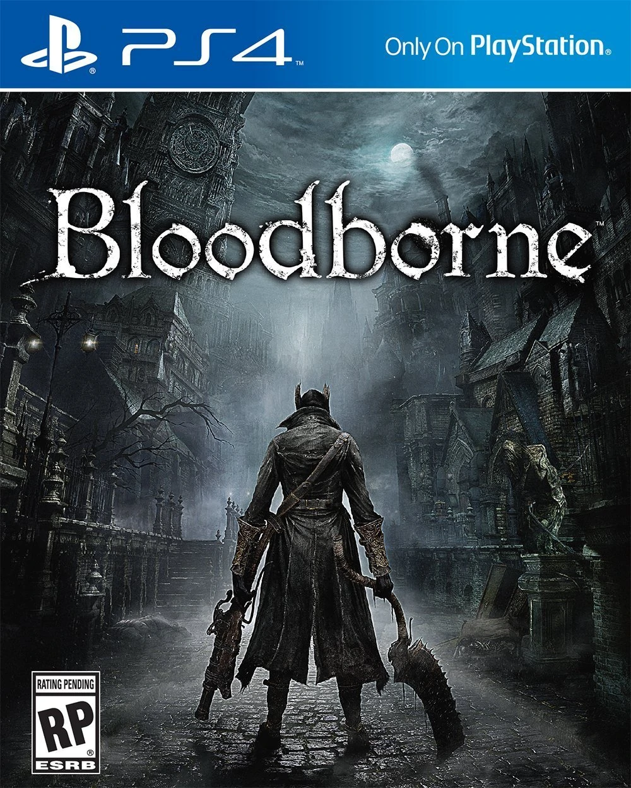

EL juego: Bloodborne
Bloodborne es un videojuego de rol de acción dirigido por Hidetaka Miyazaki, desarrollado por From Software y JapanStudio distribuido por Sony Computer Entertainment para la plataforma de PlayStation 4. El videojuego sigue las acciones del personaje del jugador, el Cazador, a través de Yharnam, una ciudad ficticia de estilo victoriano, cuyos habitantes han sido afectados con una enfermedad de transmisión sanguínea anormal.
Al despertar en Yharnam durante la noche de «la caza» tras recibir un tratamiento de la conocida «sangre milagrosa», el Cazador busca algo conocido solo como paleblood ("sangre pálida" en español) para terminar la cacería.
El videojuego cuenta con una vista en tercera persona y su jugabilidad se enfoca en el combate basado en armas y la exploración. Los jugadores luchan contra enemigos bestiales, entre ellos jefes, usando elementos tales como armas blancas y de fuego, viajando a través de la historia, explorando las diferentes áreas del videojuego, interaccionando con los PnJs, además de descubrir y desentrañar los numerosos misterios de ese mundo.